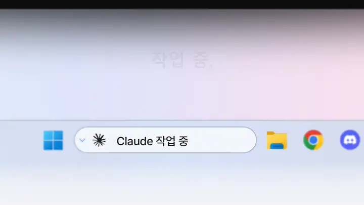
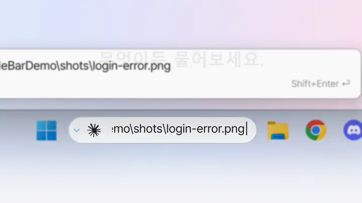
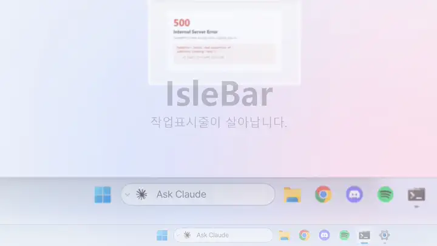
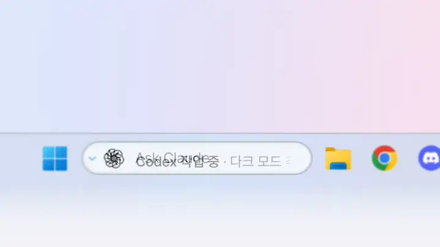
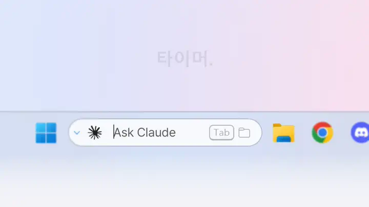
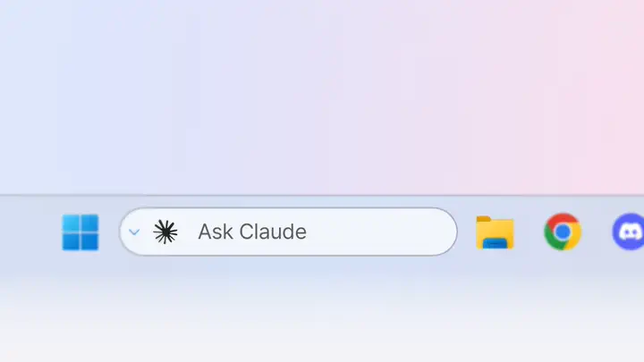
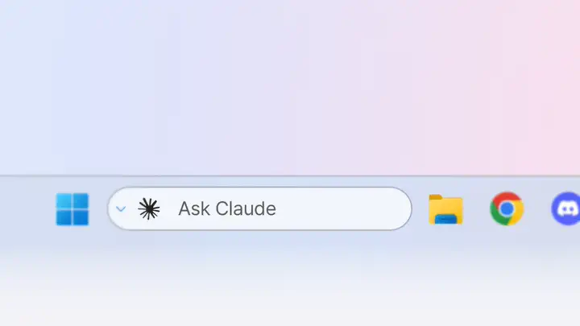

작업표시줄에서 바로 질문.
바를 클릭하거나 Ctrl+Alt+C를 누르고, 할 일을 적고 Enter. 터미널이 열리고 Claude Code나 Codex가 그 질문으로 시작합니다.
- ↑ ↓로 최근 질문 50개를 다시 불러옵니다.
- 긴 질문은 바 위에 전체가 보이고, Shift+Enter로 여러 줄 작성 창이 열립니다.
- ⌄ 버튼에 세션, 모델, 생각 강도, 권한, 리모트 컨트롤 옵션을 둘 수 있습니다.
살아 움직이는 Windows 11 작업표시줄. 검색창에서 Claude Code나 Codex에게 물어보고 — 작업 중인지, 답을 기다리는지, 끝났는지 바로 확인하세요.
IsleBar는 Windows 11(x64)에서, 작업표시줄 검색창이 상자나 아이콘으로 표시된 상태에서 동작합니다.
작업 중. 답변 필요. 완료. 검색창이 알려 주니 Claude Code나 Codex가 일하는 동안 다른 일을 하세요. 주황 테두리는 답을 기다린다는 뜻, 초록은 끝났다는 뜻입니다.

바는 원래 검색창이 있던 자리에 그대로 있고, 안의 내용만 바뀝니다.

바를 클릭하거나 Ctrl+Alt+C를 누르고, 할 일을 적고 Enter. 터미널이 열리고 Claude Code나 Codex가 그 질문으로 시작합니다.

바에 화면 캡처나 로그를 놓으면 경로가 입력창에 들어가 바로 질문할 수 있습니다.

Codex CLI도 똑같이 작업 중 · 답변 필요 · 완료가 표시됩니다. Codex 마크는 PC에 이미 설치된 Codex 확장에서 읽어 오며, IsleBar는 OpenAI 로고를 싣지 않습니다.

25m, 90s, 1h 30m처럼 입력하고 Enter. 바뀌는 숫자만 굴러갑니다.

Tab을 누르고 입력하면 모든 드라이브에서 찾은 파일이 입력하는 대로 작업표시줄 위에 나타납니다. Everything 덕분입니다.

크롬, 엣지, 파이어폭스 등 브라우저에서 받는 파일이 진행되는 동안 표시되고, 끝나면 파일 이름과 함께 완료가 뜹니다. 클릭하면 파일 탐색기에서 보여 줍니다.

스포티파이, 브라우저의 유튜브 등 대부분의 플레이어가 앨범 커버, 소리 막대, 앨범 색 재생 바와 함께 보입니다. 마우스를 올리면 ⏮ ⏯ ⏭.
노래 도중 AI 작업이 끝나면 음악을 가리지 않고 초록 테두리만 켜집니다.

헤드폰, 충전, 인터넷, 복사, CPU·메모리 과부하, 집중 모드, 일정, 마이크·카메라 사용 — 잠깐 보였다가 비켜 줍니다. 팝업은 없습니다.
색은 하나의 뜻만: 주황은 AI가 답을 기다릴 때, 빨강은 손봐야 할 때(배터리 부족, 또는 사용 한도·오류로 AI가 멈췄을 때), 초록은 무언가 끝났을 때. 방해 금지 중에는 알림음이 울리지 않고, 게임·영상 전체 화면에서도 끌 수 있습니다.

Windows 테마를 따라가며, 바꾸는 순간 다시 칠해집니다 — 재시작 없이.
네 — MIT 라이선스의 무료 오픈소스입니다. 수정, 아이디어, 피드백은 GitHub에서 언제든 환영합니다.
느낌은 그렇습니다 — 다이나믹 아일랜드 스타일의 살아 있는 바지만, 화면 위에 떠 있는 대신 Windows 11 작업표시줄의 검색창 자리에 들어갑니다.
네. IsleBar를 설치하고 Claude Code·Codex 연결(설치 화면 체크 하나)을 켜면, 답이 필요할 때는 주황 테두리, 끝나면 초록 테두리와 알림음으로 알려 줍니다. 터미널을 계속 지켜볼 필요가 없어요.
AI 기능(바에서 질문하기, 작업 중 · 답변 필요 · 완료 보기)에만 필요합니다. 음악, 타이머, 다운로드, 알림은 없어도 되고, 파일 검색에는 Everything이 필요합니다.
아니요. PC 안에서만 동작합니다. 오류 보고는 직접 켰을 때만, 오류·버전과 기본 기기 정보만 보냅니다 — 창 제목, 파일, 질문 내용, IP는 절대 보내지 않습니다. 개인정보 처리방침.
추가 정보 → 실행을 누르세요. 코드 서명을 준비하고 있습니다.
설정 › 앱 › IsleBar › 제거. 원래 검색창이 돌아오고 IsleBar의 연결(훅)도 지워집니다(스토어 버전은 제거 전에 IsleBar 설정에서 Claude Code / Codex 연결을 먼저 꺼 주세요).
English, 简体中文, 繁體中文, Français, Deutsch, Italiano, 日本語, 한국어, Português, Español — Windows 언어를 따라갑니다.
고장, 아이디어, 질문 — GitHub나 이메일로 알려 주세요.